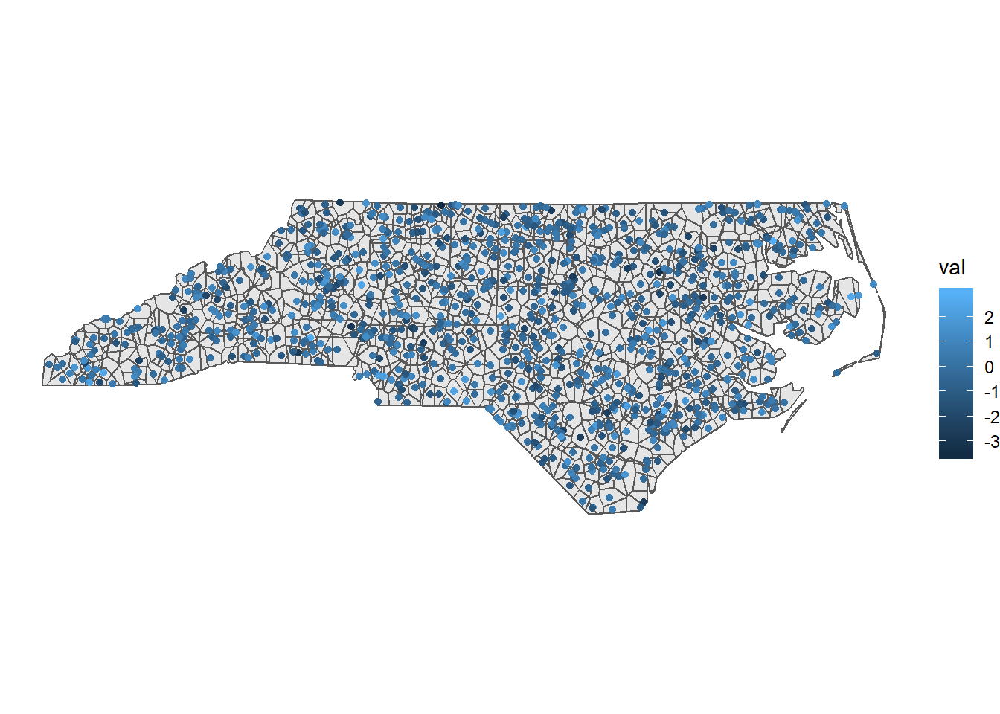
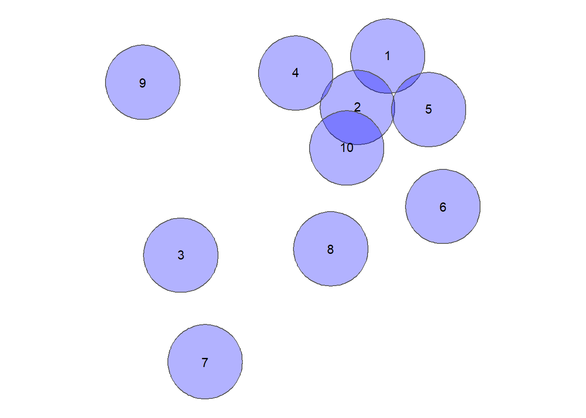

0.1 Binary Predicates and DE-9IM
Binary Predicates check topological relationships betweeen geometries. This can be very practical for data quality questions (e.g. “None of the State borders should ovelap”) or also for neighbourhood question (e.g. “which states border the state of Nevada?”).
Lets take the example of a chessboard:
Some topological relationships have specific names. For example, if we want to know which field touch a specific field, the name for this predicate is “touches”. This is implemented in the function st_touches of the packages sf:
So to see which field touch field number 36, we can write the following line of code:
## Sparse geometry binary predicate list of length 1, where the predicate was `touches'
## 1: 27, 28, 29, 35, 37, 43, 44, 45Visually, these are the following fields:

Similarly, there are further named topological relationships. Each of them has it’s own function in R:
- Contains (
st_contains) - Covers (
st_covers) - Intersects (
st_intersects) - Within / Inside (
st_within) - Covered by (
st_covered_by) - Crosses (
st_crosses) - Overlaps (
st_overlaps)
Regarding the visual example above, we can imagine a chess piece placed on field #36. If this figure was a Queen or a King, all of the fields resulting from st_touches are reachable. In terms of contiguity, this is what is typically called the Queen’s or the King’s Case. However, this is might not the relationship that we are looking for: Say we would want to exclude the diagonal fields from our selection, the way a Rook would move in chess. How can we implement this in R?
None of the named topological relationships (binary predicates) above correctly describes this case (touches_but_not_at_edges or shares_boundary would be appropriate). In this case, we can use the Dimensionally Extended 9-Intersection Model (DE-9IM) to precisely formulate the realtionship we are looking for: the Rooks Case.
IN DE-9IM, the intersection of two objects is viewed at three levels for each object: The Interior, the Boundry and the Exterior (\(3^2= 9\), hence the name). These levels mean different things for Polygons, Lines or Points, but let’s just look at the simple case for now, polygons (which is the case for our chess fields). Take the following example

The interior of a polygon is the area inside the polygon. If the two areas overlap (as is the case of blue and red), the result from an intersection would also be a polygon. More formally: The Dimesion of \(I(blue) \cap I(red)\) is an area. Areas get a value of 2, Lines 1 and points 0. If there is no intersection (as is the case in blue and green), the result equals to FALSE.
This was the first of 9 Intersections. Let’s look at the next one:
Interior of blue with the boundry of green:

The resulting object has a dimenion “line”, i.e. 1. Formally: \(dim(I(blue) \cap B(red)) = 1\). Now just for the sake of looking at the third level (Exerior), let’s look at what this looks like:
p2_ls <- st_cast(p2,"LINESTRING")
p2_ls2 <- st_intersection(p1,p2_ls)
ggplot() +
geom_sf(data = p1, fill = "blue", alpha = 0.4) +
geom_sf(data = p2, fill = "red", alpha = 0.4)+
geom_sf(data = st_difference(p1,p2), fill = "yellow", lwd = 2)+
theme_void()
The resulting object is again an area, i.e. 2. Formally \(dim(I(blue) \cap E(red)) = 2\).
If we go through all intersections of Interior, Boundry and Exterior of both geometries, we can denote for each comination what type of dimesion we “allow”. This can be either 0 (for points), 1 (for lines) or 3 (for areas) or TRUE (for either of these), or FALSE (for none of these) or * (for "I dont care).

Why go through all this trouble? Because we would like to specify the rooks case, and none of the named predicates matches. So let’s define the rooks case ourselves:
0.2 Rooks Case
If we go throught the all nine combinations of the DE-9IM, this is what defines the rooks case:
| Interior | Boundary | Exterior | |
|---|---|---|---|
| Interior | nothing | dont care | dont care |
| Boundary | dont care | Line | dont care |
| Exterior | dont care | dont care | dont care |
We can now write this into a string, starting from the top left: F1*
Now that we have this string, we case use st_relate()and specify the string as the pattern we are looking for:
## Sparse geometry binary predicate list of length 1, where the predicate was `relate_pattern'
## 1: 28, 35, 37, 44Which visually gives us this pattern:

Because this was so much fun, let’s also have a look at the opposite, the Bishops Case.
0.3 Bishops Case
| Interior | Boundary | Exterior | |
|---|---|---|---|
| Interior | nothing | dont care | dont care |
| Boundary | dont care | Point | dont care |
| Exterior | dont care | dont care | dont care |
## Sparse geometry binary predicate list of length 1, where the predicate was `relate_pattern'
## 1: 27, 29, 43, 45Visually:

0.4 Toplogy Rules
in ArcGIS, you create a topology rule by first creating a Feature Dataset in a Geodatabase, and then adding one or more Topology Rules to that Feature Dataset. In R, you can check topology using the DE-9IM together with st_relate().
0.4.1 Must not overlap

In context of DE-9IM, this is a simple case. The polygon interiors should not overlap at all, everything else does not matter. Interior-Interior is the first of the 9 intersections, so the the intersection matrix as a code string would be: 2********. In the case of the example below:
set.seed(10)
nrows <- 10
circs <- data.frame(
id = 1:nrows,
x = rnorm(nrows),
y = rnorm(nrows)
) %>%
st_as_sf(coords = c(2,3)) %>%
st_buffer(0.25)circsplot <- ggplot(circs) +
geom_sf(fill = "blue",alpha = 0.3) +
geom_sf_text(aes(label = id)) +
theme_void()
circsplot
This gives us a sparse matrix as an output, which is esentially a list with the same length as the x, where each position is a vector of integers with the indicies of the features in y (which may equal to x) where the pattern matches.
## Sparse geometry binary predicate list of length 10, where the predicate was `relate_pattern'
## 1: 1, 2, 5
## 2: 1, 2, 4, 5, 10
## 3: 3
## 4: 2, 4
## 5: 1, 2, 5
## 6: 6
## 7: 7
## 8: 8
## 9: 9
## 10: 2, 10Setting sparse = FALSE returns a crossmatrix of all combinations.W
crossmatrix <- st_relate(circs,pattern = "2********",sparse = FALSE)
crossmatrix[1:6,1:6] # only showing 6 since this prints nicely## [,1] [,2] [,3] [,4] [,5] [,6]
## [1,] TRUE TRUE FALSE FALSE TRUE FALSE
## [2,] TRUE TRUE FALSE TRUE TRUE FALSE
## [3,] FALSE FALSE TRUE FALSE FALSE FALSE
## [4,] FALSE TRUE FALSE TRUE FALSE FALSE
## [5,] TRUE TRUE FALSE FALSE TRUE FALSE
## [6,] FALSE FALSE FALSE FALSE FALSE TRUE# Remove the diagonals since it's simply each feature tested against itself
diag(crossmatrix) <- FALSE
error <- which(crossmatrix,arr.ind = TRUE) %>%
as.vector() %>%
unique()
circsplot +
geom_sf(data = circs[error,], fill = "red", alpha = 0.3)
0.4.2 Must not have gaps
Lets cosider the North Carolina Dataset for this question.
nc = st_read(system.file("shape/nc.shp", package="sf"), quiet = TRUE)
ggplot(nc) +
geom_sf() +
theme_void()
The first task is to dissolve all adjecent polygons together
## Geometry set for 1 feature
## geometry type: MULTIPOLYGON
## dimension: XY
## bbox: xmin: -84.32385 ymin: 33.88199 xmax: -75.45698 ymax: 36.58965
## epsg (SRID): 4267
## proj4string: +proj=longlat +datum=NAD27 +no_defsIf the output is a multipolygon as it is the case here, it’s bad news, there are gaps. To check which parts are disconnected from each other, we can cast the multipolygon to a polygon (in ArcGIS Terms “Multipart to singlepart”), add a rowname for each part and colour it by rowname.
nc_singlepart <- nc_union %>%
st_cast("POLYGON")%>%
st_sf() %>%
mutate(id = 1:n())
ggplot(nc_singlepart) +
geom_sf(aes(fill = factor(id))) +
labs(fill = "id") +
theme_void()
But maybe we can live with these Islands in the state of North Carolina, since this is in fact an accurate representation of reality (the gaps are a result of the Atlantic Ocean). We must now check whether the individual geometries have holes. Here we can make use of the way polygons are defined in sf:
geometry with a positive area (two-dimensional); sequence of points form a closed, non-self intersecting ring; the first ring denotes the exterior ring, zero or more subsequent rings denote holes in this exterior ring
This means that the length of each Polygon geometry must be 1. A length of 2 or more would mean that there are one (or more) holes in the geometry. We can do this with any of the functions from the apply family, I prefer purrr:
## [1] TRUE TRUE TRUE TRUE TRUE TRUELet’s see what happens if we cut a hole into the polygons
holes <- nc_singlepart %>%
st_union() %>%
st_centroid() %>%
st_buffer(0.5)
nc_holes <- st_difference(nc_singlepart,holes)
ggplot(nc_holes) +
geom_sf() +
theme_void()## [1] TRUE TRUE TRUE TRUE FALSE TRUE